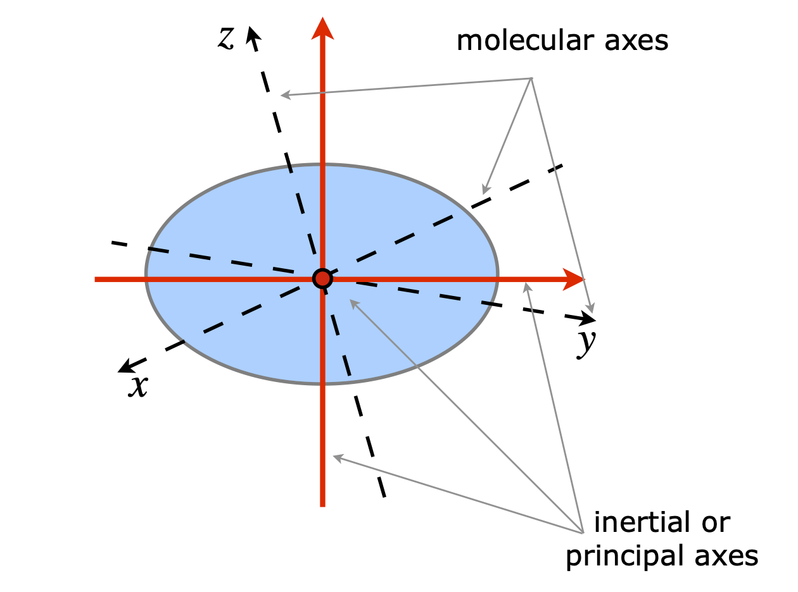

Molecular vibrations and pendulums¶
# import all python add-ons etc that will be needed later on
%matplotlib inline
import numpy as np
import matplotlib.pyplot as plt
from sympy import *
init_printing() # allows printing of SymPy results in typeset maths format
plt.rcParams.update({'font.size': 14}) # set font size for plots
14 Molecular vibrations¶
Matrix eigenvalue - eigenvector problems can also be used to solve a number of related problems such as molecular vibrations, coupled pendulums, and damped oscillators. When the displacements from equilibrium are small the equations produced are linear, and this is always assumed in solving these equations with matrix methods. The numerical methods of Chapter 11 allow the fully non-linear equations to be solved. In this section, the concept of normal modes is described first, then the motion of linked pendulums, and finally the vibrational motion of molecules is described and some examples worked through.
14.1 Vibrational normal modes¶
If the initial displacements made to the atoms of a molecule correspond to that expected of any one of the normal modes, Figure 23, then the oscillations of all atoms continue only in that normal mode. The first reason is because each atom is connected to all others via chemical bonds, and second because each normal mode is orthogonal to every other one. This means that, ideally, no energy flows from one normal mode to any other, and although this happens in practice, for example due to an harmonicity, it need not concern us here. If an arbitrary initial displacement is made that does not correspond to that expected of a normal mode, a complicated motion results. However, this can always be decomposed to a linear combination or sum of the normal modes, taken in various proportions as necessary to describe the motion. The overall motion, when many modes are simultaneously excited, causes beating; this is particularly clear in a coupled pendulum as the two pendulums come into and go out of phase with one another. This is seen when one of the pendulum bobs becomes stationary for an instance while its partner swings maximally; this then loses energy and becomes instantaneously stationary while the other has gained maximum displacement and which continues by swapping energy ad infinitum.
14.2 Calculation of normal modes¶
In a mechanical or molecular vibration, we usually try to find the equation relating forces. In simple harmonic motion, such as stretching a chemical bond, the potential energy is by Hooke’s law, \(V = ks^2/2\), where \(k\) is the force constant and \(s\) the amount the bond extends away from its equilibrium length. The force \(f\) to stretch the bond, is obtained by differentiation of \(\displaystyle f=-\frac{dV}{ds}=-ks\) and is also given by Newton’s second law; force = mass \(\times\) acceleration, \(\displaystyle f=m\frac{d^2s}{dt^2}\) which provides the connection to time. Equating the two terms produces the equation of motion for small displacements from equilibrium, viz.
The next step is to find out what \(k/m\) represents. By knowing that the motion of the pendulum is periodic, we may assume that the displacement at any time is described by \(s = u\cos(\omega t + \varphi)\), where \(\omega\) is an angular frequency, \(\varphi\) is the phase, \(t\) is time, and \(u\) is the amplitude of the motion. The phase is arbitrary, and can be set to zero. Differentiating s twice by time and multiplying by m to obtain the force gives
By comparison with equation 46, the (angular) oscillation frequency is \(\omega =\sqrt{k/m}\), and is in radians s\(^{-1}\). A similar equation describes the oscillation of a pendulum, but now the angular frequency is \(\omega = \sqrt{g/L}\) if \(L\) is the length of the pendulum and \(g\) is the acceleration due to gravity.
When there is more than one oscillator - for instance, two coupled pendulums or the many vibrations of a polyatomic molecule - there is one force equation for each mass in the molecule. The potential \(V\) for atom 1 now has terms not only describing its own position, but also of all others connected to it, and could contain terms with each of \(s_1, s_2, \cdots\) etc., where \(s\) is the displacement of any atom. The equations are therefore coupled and when placed into a matrix form there are off-diagonal force-terms that are not zero;
The \(k\)’s in the square matrix are the forces or negative derivatives of the potential energy with respect to each displacement \(s_1, s_2, \cdots\). For example, in the coupled pendulum example that will shortly be worked through, we find that \(\displaystyle -\frac{dV}{ds_1}=-\frac{mgs_1}{L}+k(s_2-s_1)\) then \(\displaystyle k_{11}=-\frac{mgs_1}{L}-k\) and \(k_{12}=k_{21}=k\).
The next step in the calculation is to write down the equation of motion of the normal modes. Each normal mode has, by definition, its own frequency \(\omega_1, \omega_2, \cdots\) and so forth. Occasionally modes are degenerate, but nevertheless, by analogy with a single oscillator, each normal mode has an equation of the form \(\displaystyle \frac{d^2s_n}{dt^2} + \omega^2s_n = 0\), where \(s_n\) is the coordinate describing the displacement of the normal mode and is not the same as \(s_1\) or \(s_2\) etc. used above. If the equations for the several normal modes are put into matrix form, this is diagonal, because each normal mode is unique and does not depend on any other;
The equations 47 and 48 describe the same motion but are on different sets of axes. The former, is in terms of displacements of atoms, and the latter, in displacements of groups of atoms in a normal mode. If equation 47 is diagonalized, this has the effect of ‘rotating’ or more generally transforming the atoms’ coordinates by mixing them up in such a way that they become the normal mode coordinates. The eigenvalues obtained can then be identified with the squared frequencies. Taking equation 47 and making an eigenvalue eigenvector equation gives
which can be solved, based on equation 31, by writing it as \(\pmb{ks} = \pmb{λs}\), where \(\pmb{k}\) is the matrix of force constants, and \(\pmb{s}\) the eigenvalues. Once the eigenvalues are obtained, they form a diagonal matrix and, term by term, are equal to the diagonal matrix of squared frequencies. If the eigenvectors are also obtained, their symmetry gives the pattern of displacements, by which is meant that, if all the values in an eigenvector are the same, the motion is all in one direction and, if different, then some masses are moving in one direction and other masses in other directions as determined by the sign.
Summary:¶
The matrix of forces is constructed and made into an eigenvalue - eigenvector equation and this is diagonalized. The eigenvalues \(\lambda\) are then equated to the squared frequencies of the normal modes. The eigenvectors indicate the pattern of normal mode displacements.
Using the matrix method to solve problems of this type is best described with an example. The most difficult part is always obtaining the equation for the energy and therefore forces. In this example, the motion of two identical pendulums will be calculated. They have length \(L\) and mass \(m\) at the end of rigid, mass-less rods, and the masses are coupled together with a spring with force constant \(k\), Figure 59. The pendulums are initially at equilibrium separated by the un-extended length of the spring, and then energy is added by moving one or both of the individual pendulums by a very small amount so that Hooke’s law for the spring is obeyed, and the change in potential, due to height, is directly proportional to the change in the vertical angle. There are two normal modes, see Figure 60. Either the pendulums swing together in phase both moving in the same direction at constant separation, or they move together and apart stretching and compressing the spring. These are clearly the only possible motions of the two pendulums for small angular motion and we shall want to find out their frequency (eigenvalues) and the normal mode displacements using the eigenvectors.


Left, figure 59, Right figure 60. Left: Two coupled pendulums of length \(L\) and mass \(m\) connected by a spring with force constant k. Right: Calculation of height \(h\). Right Normal modes of a coupled pendulum.
The first step is to work out the potential energy \(V\), which is the sum of the increase in height as each bob swings and the energy stored due to the change in length of the spring. The potential due to a pendulum’s height change is \(mgh\), where \(h\) is the vertical displacement when the pendulum swings, defined in the right-hand pane of Figure 59 and \(g\) is the acceleration due to gravity and \(m\) is mass. Next, the energy due to compressing or extend- ing the spring is found then, using the total potential energy, the forces are calculated. The potential energy of extending a spring of force constant \(k\) by distance \(s\), is \(ks\). As the restoring force is always equal to the negative derivative of the potential and is also mass times acceleration, then,
It remains, therefore, to calculate the potential \(V\) in terms of the displacement, and to solve the resulting eigenvalue - eigenvector equations.
Using the right-hand part of Figure 59, by definition, \(\sin(\theta) = s/L\) and \(\cos(\theta) = (L - h)/L\). The differential equations have to be linear to use the eigenvalue - eigenvector method, thus the displacements and hence angle \(\theta\) is small. Rearranging to find \(h\), and assuming small angles means that the cosine can be expanding as \(\cos(\theta) = 1 - \theta^2/2 + \cdots\) giving
The potential energy of each of the two bobs due to their increase in height, is \(mgh = mgL\theta^2/2\), but the energy is needed in terms of the displacement \(s\) not the angle \(\theta\) and using trigonometry again, \(\sin(\theta) = s/L \approx \theta\), gives \(\displaystyle \frac{mgs^2}{2L}\) for the potential energy.
The potential energy due to the spring’s extension or compression is, by Hooke’s law, \(\displaystyle \frac{k}{2} \Delta s^2=\frac{k}{2}(s_2-s_1)^2\) making the total potential energy,
where the displacement of the pendulums is \(s_1\) and \(s_2\). This, in effect, means that we have chosen the basis set for the calculation to be the two horizontal displacements. The vector of displacements, which we shall need later on is \(\displaystyle \pmb{s}=\begin{bmatrix} s_1\\s_2\end{bmatrix}\).
The force on pendulum one is, by definition, mass \(\times\) acceleration
and on pendulum two, similarly
As a check, the force on the pendulums should be due to gravity alone, and not depend on the force constant, \(k\), viz,
In matrix form the two force equations 50 and 51 become
The eigenvalues are obtained by expanding the secular determinant
and solving the characteristic equation \(\displaystyle \left(-\frac{mg}{L}-k-\lambda \right)^2-k^2=0\) for \(\lambda\), giving eigenvalues and eigenvectors of
and the eigenvector modal matrix is \(\displaystyle \begin{bmatrix} 1 & -1\\ 1 & 1 \end{bmatrix}\).
The first eigenvalue corresponds to the first eigenvector, and must be the motion where both pendulums move in the same direction since both values in \(x_1\) have the same sign. The second eigenvector shows that the spring is stretched because the displacements are in opposite directions. We may surmise this also, because only the second eigenvalue involves \(k\), the spring’s force constant.
The matrix equation of forces for the normal modes is
and as the matrix is diagonal it can be equated to the (diagonalized) eigenvalue matrix. Therefore, using \(\lambda_1\) calculated above gives \(\displaystyle -\lambda_1 = m\omega_1^2= \frac{mg}{L}\) and similarly for \(\lambda_2\), gives the normal mode frequencies as
which can also be written as
These results tell us that one motion of the pendulums has a frequency \(\sqrt{g/L}\), which is that of single free pendulum of the same length and mass, and this motion must be that of both pendulums moving in phase with one another in the same direction and without changing the length of the spring because \(k\) is not in the formula. The other, out-of-phase frequency is higher, \(\sqrt{g/L + 2k/m}\), since \(k\) is positive, and is the motion when the two pendulums are opposed to one another, and therefore, the spring is continually compressed and extended.
It is interesting to consider what happens when the force constant is very small. In this case, both pendulums tend towards the same frequency because they are hardly coupled;
You may know that pendulum clocks fastened to the same wall will become synchronized to one another. This is because there is a coupling between them through the wall, and although very weak, it acts like the spring in this problem, and forces the pendulums to come into phase in a normal mode. In the limit \(k = 0\), then the two pendulums are independent of one another, because their coupling is zero and although both oscillation frequencies are the same they can never become synchronized unless they are started off that way.
When the spring constant is very large, or rather the ratio \(k/m\) is large, gravity becomes relatively unimportant and the out-of-phase vibrational normal mode frequency becomes much larger than the in-phase one and approaches \(\omega_2=\sqrt{2k/m}\). If gravity were ‘turned off’, \(g = 0\), the pendulums would only move if the relative separation of the bobs was changed from the equilibrium separation by compressing or extending the spring. Only one mode is now possible which is the out-of-phase mode 2 with frequency \(\omega_2=\sqrt{2k/m}\).
The two modes with frequencies \(\omega_1\) and \(\omega_2\) are the normal modes of the vibrations; we know this by noting that the eigenvectors are orthogonal as the matrix is Hermitian, but as a check the dot product is \(\displaystyle \begin{bmatrix} -1 & 1\end{bmatrix}\begin{bmatrix} 1 \\ 1\end{bmatrix}=0\).
Suppose that the normal modes displacements that form the column matrix \(\pmb{Q}\) are \(Q_1\) and \(Q_2\). Their value in terms of the pendulum’s displacements are calculated via \(\pmb{Q} = \pmb{x}^T\pmb{s}\) (see next section) where \(\pmb{x}^T\) is the transpose of the eigenvector matrix and \(\pmb{s}\) the vector of displacements, consequently
or \(Q_1=s_1+s_2\) and \( Q_2=S_2-s_1\).
To isolate one mode, set \(Q_1 = 0\), then the displacements of the bobs are equal and opposite \(s_1 = -s_2\). This corresponds to moving one bob of the pendulum to the left, and the other to the right by the same amount; therefore, the motion is at the same frequency and in phase. This is the out-of-phase normal mode with frequency \(\omega_2\). The displacements of the bobs follow \(s_1 = u \cos(\omega_2 t + \varphi)\) and \(s_2 = -u \cos(\omega_2 t + \varphi)\). The total displacement is zero at all times.
To isolate the other mode, set \(Q_2\) = 0 then \(s_2 = s_1\) and the displacements are always equal to one another during the oscillation, which corresponds to both bobs moving to the right by the same amount, and therefore, they move at the same frequency and with constant phase; this is the in-phase normal mode with frequency \(\omega_1\). The motion is \(s_1 =s_2 =u\cos(\omega_1 t+\varphi)\).
14.3 How to calculate vibrational normal modes in a molecule using the GFG matrix method¶
The basic premises are the same as for the pendulum just calculated.
(i)\(\quad\) The vibrations undergo simple harmonic motion. In a molecule, this means that each bond is a harmonic oscillator.
(ii)\(\quad\) Assume that the energy of each potential energy term, which in this case is the ‘spring’ connecting the atoms adds separately to the total.
If a molecule has potential energy \(V\), then this energy can be expressed as a Maclaurin expansion about the minimum, or equilibrium, configuration, using displacements of each of the atoms in each of \(x-, y-\), and \(z-\)directions. Clearly, this is going to be a complicated function. If there are \(n\) atoms with \(3n\) coordinates, the displacement from equilibrium is \(s_i\) for atom coordinate \(i\). The potential energy is
The zero subscripts mean that the gradient is evaluated about the equilibrium position at each coordinate, where the extension \(s_i = 0\). The summation index covers all coordinates \(1 \to 3n\). The indexing is up to us to choose, but could be 1 for atom ones’s x-coordinate, 2 for \(y\), 3 for \(z\), then 4 for atom 2’s x-coordinate, 5 for \(y\) and so on. The second derivative has two summations and contains \((3n)^2\) terms. The reason for all these terms is easiest to see with just two dimensions. Imagine the potential is shaped like a bowl; the height is \(V\) and \(x\) and \(y\) are the two displacements, \(s\). The first derivative \(dV/dx\) gives the slope (force) in the x-direction at constant \(y\), and similarly \(dV/dy\) the force in the y-direction at constant \(x\). When \(i = j\) the second derivative \(d^2V/dx^2\) describes how the force varies along the x-axis at constant \(y\). The ‘cross terms’, when \(i \ne j\), measures these values between the axes.
The origin of the potential has a value \(V_0\), which is arbitrary, and because potential energy is a relative measure, \(V_0\) can be set to zero. The first derivative of the potential is the force, and as this is expanding about the equilibrium position, it is zero. The potential is therefore,
which is analogous to the quadratic potential based on Hooke’s law. The kinetic energy is by definition \(mv^2/2\) for each mass or
for all masses. We now have to assume a great deal and jump almost to the answer by using Lagrange’s formulation of Newton’s laws of motion. Furthermore, we are going straight to the matrix form by defining
which is a matrix of force constants \(k\). Next, a matrix \(\pmb{M}\) is defined whose inverse is the matrix of second derivatives of the kinetic energy with respect to velocities \(\dot s\), in which terms are of the form \(\displaystyle \frac{\partial^2T}{\partial \dot s_i \partial \dot s_j}\) and this turns out to be a diagonal matrix of the masses,
and therefore
is the diagonal matrix of reciprocal masses; see Section 4.10.
Writing out the Lagrange equation gives
The second of these equations looks rather like that for a single oscillator, equation 47, if we identify \(\pmb{MF}\) with \(k/m\), which, dimensionally, is correct.
To solve this last equation, it is necessary to show that it can be turned into an eigenvalue - eigenvector equation. Supposing that the motion is harmonic with frequency \(\omega\), a solution for the \(i^{th}\) atom is \(s_i = a_i\cos(\omega t + \varphi)\) and by differentiating this displacement twice with time, it is seen that this is a solution of equation 59 because the result is
Combining the equations 59 and 60 produces the eigenvalue - eigenvector equation
with eigenvalues \(\omega^2\) as roots of the secular determinant \(\left|\pmb{MF}- \omega^2\pmb{I}\right| = 0\).
The eigenvectors will be labelled \(\pmb{x}\). There is one difficulty with this which is that \(\pmb{M}\) and \(\pmb{F}\) do not always commute and, although it is not obvious, this is easily overcome by using the square root of matrix \(\pmb{M}\) instead of \(\pmb{M}\) itself.
In the form shown below, we define a matrix \(\pmb{G}\) as
and define the displacement in terms of reduced mass
therefore, each \(q\) matrix element takes the form \(q_i =s_i\sqrt{m_i}\). With these changes equation 76 becomes
and the secular determinant
The \(\pmb{F}\) matrix is that of the force constants; $\(\displaystyle \pmb{F} =\begin{bmatrix} k_{11} & k_{12} & k_{13} & \cdots\\ k_{21} & k_{22} &\cdots & \cdots \\ \vdots & \vdots & & k_{nn} \end{bmatrix}\)$
The \(\pmb{GFG}\) matrix product has the form
so that each diagonal term is divided by the mass appropriate to that position in the matrix, and the off-diagonal terms at positions \(i,j\) are divided by the square root of the product of the corresponding masses in the basis set; i.e. by \(\sqrt{m_im_j}\). The \(k_{ij}\) are the force constants. This matrix of reduced mass is the \(\pmb{GFG}\) matrix.
A fuller analysis of the problem leads to the conclusion that the eigenvectors x can be used to produce the normal mode displacements \(Q\) via
where \(\pmb{q}=\pmb{G}^{-1}\pmb{s}\) so that each element is \(q_i= s_i\sqrt{m_i}\), and the coordinate displacements \(s\) are given by
Summary¶
\(\pmb{G}\) is the diagonal matrix of \(\sqrt{m}\) and \(\pmb{F}\) is the matrix of force constants. The eigenvalues are the squared frequencies of the molecular normal modes \(Q\), and are calculated from the secular determinant \(\left| \pmb{GFG} - \omega^2\pmb{1} \right| = 0\). The normal mode and coordinate displacements are calculated using equations 67 and 68.
Stretching vibrations of CO\(_2\).¶
This method is rather abstract but can be made less so by working through an example. We will calculate some of the normal modes of a linear triatomic molecule, such as CO\(_2\), by considering just the motion along the line of atoms, as shown in Figure 61. A linear molecule is chosen to make the calculation simpler; a bent molecule such as H\(_2\)O or SO\(_2\) can be calculated in a similar manner, but the algebra in calculating the potential is more complex. An example is given at the end. Herzberg gives several examples including different possible models of the potentials that can be used; Herzberg (1964, vol II, Chapter 2).

It is normally assumed that the motion of the atoms is harmonic and we additionally assume that the only force constants are those between adjacent atoms; this is equivalent to assuming that the valence bond model describes the bonding. A molecular orbital model would consider forces constants between one atom and every other atom. The calculation will be done in two ways. First directly, as in Section 14.2 but using mass weighting from the start; then secondly, using python with the \(\pmb{GFG}\) matrix method which introduces mass weighting in the \(\pmb{GFG}\) product.
The first calculation uses mass-weighted coordinates and force constants. This means that the displacements \(s\) of atom \(i\) are modified to become \(q_i =s_i\sqrt{m_i}\), and force constants between atoms \(i\) and \(j\) become \(\displaystyle K_{ij}=\frac{k_{ij}}{\sqrt{m_im_j}}\) as in equation 76.
The starting point is to calculate the potential energy and, from this, the forces on the atoms. As the molecule is symmetrical, there is only one force constant, but the mass-weighted force constants will be different. The normal modes for a simple molecule can easily be sketched, and two of them are shown in Fig. 7.62. The molecule is linear giving \(3N - 5\) or \(4\) modes in total, the other two are the degenerate bending motion in the plane of the page. One where the carbon atom moves down and the two oxygen atoms move up and then vice versa. The other bending normal mode is the similar motion but perpendicular to the plane of the page.

The potential energy is the sum of terms for the stretching of each bond; therefore,
The forces are the negative derivatives with respect to the displacements
With \(f\) as the force, placing these equations into matrix form gives
but, because the masses are different, we must change to mass weighted force constants, using the formula \(K_{ij} = k_{ij}/\sqrt{m_im_j}\), where \(i\) and \(j\) are the atom indices; for example \(K_{12} = k/\sqrt{m_om_c}\), is the mass-weighted force constant between atoms 1 and 2, if \(m_o\) is the oxygen mass and \(m_c\) that of the carbon. The matrix of force constants becomes
which is solved as a secular determinant with eigenvalues,
The frequency of each vibration is \(\omega^2 = -\lambda\) so the square of the normal mode frequencies are
The normalized eigenvector modal matrix is, after some rearranging and with \(M=2m_o +m_c\) as the total mass,
Notice that the eigenvectors do not depend on the force constants; this matrix is used to produce the geometry that is related to the symmetry of the vibrations, and cannot depend on the value of the force constants. The normal modes depend only on the geometry because the ‘springs’ connecting the atoms can only vibrate in certain patterns governed by the geometry or symmetry of the molecule; the frequency and size of extension depend on the force constants.
The normal mode coordinates are calculated using \(\pmb{Q} = \pmb{x}^T\pmb{q}\) (equation 67) where \(\pmb{x}^T\) is the transpose of the eigenvector matrix and \(\pmb{q}\) the vector of mass weighted coordinates with \(\pmb{q}=\pmb{s}\sqrt{m}\);
and the individual modes are
To calculate the individual atom displacements \(s_1 \to s_3\) directly, these three equations have to be solved to get \(s\) in terms of the \(Q\)’s. The coordinate displacements are calculated with the matrix equation \(\pmb{s} = \pmb{GxQ}\) (equation 68), where \(\pmb{x}\) is the eigenvector matrix, \(\pmb{Q}\) is tyhe column vector \(\displaystyle \begin{bmatrix} Q_1\\Q_2\\Q_3\end{bmatrix}\) and \(\pmb{G}\) is the diagonal maytrix of \(1/\sqrt{m}\) equation 62.
The results is
Looking at these equations, we can choose to make any of the \(Q\)’s zero to isolate normal mode motion. The three cases are now considered.
(i) Suppose we choose \(Q_1 = Q_2 = 0\), then all the atom displacements are the same, \(s_1 = s_2 = s_3 = Q_3/ \sqrt{M}\), and each atom is moving in the same direction. This cannot be a vibrational normal mode as the bonds are neither stretched nor compressed, but represents a translation, and clearly, this corresponds to the zero frequency eigenvalue \(\omega_3 = 0\). Note that if \(Q_3 = 0\) this must mean that the centre of mass does not change, no translation occurs, and so we expect to produce normal modes with this condition.
(ii) If \(Q_1 =Q_3 =0\) then \(\displaystyle s_1 =s_3=\sqrt{\frac{m_c}{2m_oM}}Q_2\) and \(\displaystyle s_2 =\sqrt{\frac{2m_o}{m_cM}}Q_2\). In this case this is the asymmetric stretch with the oxygen atoms moving in the same direction and opposed to that of the carbon, and this is \(\omega_2\). The relative motion is \(s_1 = s_3 = 0.115Q_2\) to \(s_2 = -0.308Q_2\) so the carbon atom moves further than the oxygen atoms do, which is not surprising, because the centre of mass has to be held constant and the C atom has to compensate for the motion of two O atoms. The ratio of the displacements is \(2m_o/m_c\). The total centre of gravity does not move because the total moment, found by summing the product of displacement times mass, is zero, viz.
(iii) Finally, if \(Q_2 = Q_3 = 0\) then the equations are solved when \(s_2 = 0\) and \(s_1 = -s_3\), which is the symmetric stretch \(\omega_1\) with displacements \(±Q_1/\sqrt{2m_o}\) or \(0.176Q_1\).
Bending motion¶
In the case of bending vibrations in a molecule with masses \(m_{1,2,3}\) such as HCN the potential is written as
where the bond lengths are \(r_{1,2}\) and the bending force constant \(k_b=k_\theta r_1r_2\) which keeps its units in N/m. For small angle bends
(where vector \(s\) is perpendicular to the internuclear axis just as \(s\) was along the axis) and the mass weighted \(K\) matrix of force constants becomes
which means that the ratio of bond lengths must be known if they are different from 1.
The eigenvalues are immensely complex so it is necessary to calculate numerically except for the case of \(D_{\infty h}\) point group. In this case the force constants are zero, or \(2k_3(2/m_2 +1/m_1)\) where \(m_2\) is the central atom.
In the case of \(\mathrm{CO}_2\), \(m_1\) = 16, \(m_2\) = 12 and the bond length \(r=0.116\) nm. This makes \(\omega^2 =2k_3(2/m_2 +1/m_1)\) or zero. In \(\mathrm{CO}_2\) the bending vibration has a frequency of \(667\;\mathrm{ cm^{-1}}\) and then \(k_3 = 57\) N/m.
The full calculation for linear stretches using the \(\pmb{G}\) and \(\pmb{F}\) matrix method is given next. You can modify this method to solve many similar normal mode problems with different dimensions and geometries provided the potential energy equation can be worked out and the force constant matrix obtained. If you repeat this calculation the order of the eigenvalues may be different to those shown here, which means that the labels \(Q_{1,2,3}\) may be different to those shown here.
Normal mode calculation¶
# Algorithm: Normal mode calculation: linear CO2
m_o, m_c, k, s1, s2, s3, Q1, Q2, Q3 = symbols('m_o, m_c, k, s1, s2, s3, Q1, Q2, Q3')
#m_o=16 # in amu use for numerical values only
#m_c=12
G = Matrix([[1/sqrt(m_o),0,0],[0,1/sqrt(m_c),0],[0,0,1/sqrt(m_o)]])
F = Matrix([[-k,k,0],[k,-2*k,k],[0,k,-k]])
M = G*F*G
M
vecs,vals = M.diagonalize()
vecs,vals
w = Matrix(vecs[0:3,0]) # normalise eigenvectors
v1 = w/sqrt(w.T.dot(w))
w = Matrix(vecs[0:3,1])
v2 = w/sqrt(w.T.dot(w))
w = Matrix(vecs[0:3,2])
v3 = w/sqrt(w.T.dot(w))
v1,v2,v3
# simplify(v1.dot(v1)) # check on normalisation
x = Matrix([v1.T,v2.T,v3.T]).T # combine into new matrix
x
s = Matrix([[s1,s2,s3]]) # mass weighted coordinates
q = G.inv()*s.T
q
Q = x.T*q # calculate normal modes in terms of s
Q
QQ = Matrix([[Q1],[Q2],[Q3]]) # calculate extensions in normal modes.
extns = G*x *QQ
extns
Moments of Inertia¶
Angular momentum plays a central role in chemistry, but this is usually in the context of nuclear and electron spin; for example, nuclear spin gives rise to NMR and electron spin (EPR) spectroscopies, as well as being essential for the formation of the chemical bond. The rotation of whole molecules is a natural consequence of thermal motion and is observed with microwave, infrared, Terahertz, or Raman spectroscopy. These techniques are used to measure the spacing between a molecule’s rotational energy levels. This is described next, followed by a brief description of angular momentum and moments of inertia. Finally, the calculation of bond lengths is described.
15.1 The rotational motion of molecules¶
The collision between molecules in the gas phase and at the prevailing temperature equilibrates the energy among translation, vibration, and rotational motions. A molecule can only have discrete values of vibrational or rotational energy. The lowest rotational energy is zero, and the energy levels become more widely spaced as the quantum number \(J\) is increased. The equation
describes the rotational energy, in joules, of a (rigid rotor) diatomic or linear molecule, with quantum number \(J = 0, 1, 2, \cdots\). The multiplicity and also degeneracy of a rotational level with quantum number \(J\), is \(g_J = 2J + 1\). The constant \(I\) is the moment of inertia, and is typically \(\approx10^{-45}\;\mathrm{kg\,m^2}\) for a molecule. It is this small, because a molecule’s mass is small, and its bond lengths short. An apple has a value \(I \approx 10^{-4}\;\mathrm{kg\,m^2}\) and a lorry’s wheel \(\approx 10\;\mathrm{kg\,m^2}\). As we shall see the moment of inertia is related to a bond length.
A rotational constant is defined as \(B=\frac{\hbar^2}{2I}\) making the energy \(E_J=BJ(J+1)\). Remembering that a joule is a unit of energy with base units of mass \(\times\) velocity squared, the constant \(B\) has units
Usually, however, \(B\) is expressed in units of wavenumbers (cm\(^{-1}\)) produced by dividing \(B\) by \(100hc\); the factor \(100c\) is used because \(c\) has units of m s\(^{-1}\) and we want units in cm\(^{-1}\); \(\displaystyle B=\frac{1}{100hc}\frac{\hbar^2}{2I}\).
The rotational constant \(B\) has a value that is typically less than a wavenumber. Its largest value, \(\approx 64 \;\mathrm{cm^{-1}}\), is for H\(_2\), but clearly this is not typical, as this is the lightest molecule. Once the rotational spectrum is measured, it is easy to measure \(B\), because the lines (in a diatomic ) are spaced by \(2B\). In real molecules, things are more complex, because of centrifugal distortion in the rotating molecule, but this effect is small for low \(J\) quantum numbers and does not fundamentally change our analysis. The last step is to calculate the bond length from \(I\). At one time, this was the main purpose of microwave spectroscopy, but nowadays, bond lengths of very many small molecules have been accurately measured. The technique is now more often used analytically, for example, to identify species in interstellar dust clouds, or to monitor the ethene produced by ripening fruit.
15.2 Angular momentum and moment of inertia¶
The angular momentum of a solid body is the momentum caused by virtue of its rotational motion and is a vector quantity. In an isolated molecule, this motion is about the centre of mass, also called the centre of gravity. The angular momentum produced has a fixed direction in space. In general, it is just as possible to cause the rotational motion of an object to be about its end as it is about its middle. A rod can be spun about its centre, along its axis, or about its end, and each angular momentum will be different. If the body rotates with angular frequency {, the angular momentum \(\pmb{L}\) is given by \(\pmb{L} = \pmb{I\omega}\), where \(\pmb{I}\) is a matrix of moment of inertia values and \(\pmb{L}\) and { are one-dimensional matrices or vectors. The reason for the vector quantities is that a body can move in three dimensions and the motion can be split into components along three axes. The moment of inertia of (rigidly connected) masses, where each has mass \(m_i\), is \(I = \sum_i m_ir_i^2\) where \(r_i\) is the perpendicular distance of mass \(i\) from an axis. In fact, we can choose the axes to be anywhere we want so the moment of inertia depends on where these axes are placed; it is therefore not a fundamental property of an object. This presents a problem if we are to try to calculate bond lengths, because different values would be obtained depending on where the axes are placed. The obvious place is to locate the axes at the centre of mass since a freely rotating object will rotate about this point. However, in what directions the axes point relative to the molecule has still to be chosen. Very often, we may choose to align the axes with some symmetry axis of the molecule. The molecule will always rotate about its own inertial axes and if these two sets of axes do not coincide, and they usually do not, the moments of inertia will have the form of a matrix with terms that depend on where an atom is with respect to any two axes, \(I_{xy}, I_{yz}\) etc. All is not lost, however, because there is a simple way to rotate our chosen axes onto the molecule’s inertial axes, making the moment of inertia matrix, diagonal. This will be described in Section 15.8.
The total kinetic energy of a rigid body is that due to its linear plus rotational energy. The linear kinetic energy is
and the rotational kinetic energy
thus, the moment of inertia \(I\), takes the place of the mass used to describe linear motion and angular velocity \(\omega\) (radians s\(^{-1}\)), replaces linear velocity \(\pmb{v}\) in m s\(^{-1}\). Similarly, linear momentum \(\pmb{p}= m\pmb{v}\), is replaced by angular momentum \(\pmb{L} = I\pmb{\omega}\), which is also vector quantity. The angular momentum relative to the centre of mass about an axis at the centre of a rigid disc of mass \(m\), is shown in Figure 53 and is \(\pmb{L}= m \pmb{r}\times \pmb{v}\) where \(\pmb{v}\) is the velocity of the edge of the disc and \(\pmb{r}\) its radius vector. The angular momentum points in the direction away from you, if the disc rotates clockwise when you look at its underside.
Angular velocity is, by definition, the rate of change of the angle \(\theta\) the rigid body moves through, and has units of radians / second. It can be shown that the velocity vector \(\pmb{v}\) in the centre-of-mass coordinate system is related to the angular velocity \(\pmb{\omega}\) as
The angular momentum becomes \(\pmb{L} = m\pmb{r} \times \pmb{\omega} \times\pmb{r}\), and evaluating the cross product the angular momentum is
where \(I\pmb{ }\)is a \(3 \times 3\) matrix of the moment of inertia components. The equation can be written as
where \(I_{xy}=I_{yx} \) etc. Calculating each of these terms is described in Section 13.4. The angular momentum is always proportional to the angular velocity; the proportionality is the moment of inertia, and hence the emphasis falls on calculating this. Sometimes, the angular momentum matrix is called the angular momentum tensor.
To summarize: A molecule or other solid object will rotate about its own inertial (principal) axes that are fixed in space. The geometrical axes we chose to place on the molecule need not be coincident with the inertial axes, in fact, they are usually not, and therefore the inertial matrix has off-diagonal elements. Should the inertial and geometrical axes coincide, only the diagonal values exist. By diagonalizing the inertial matrix, the two sets of axes are made coincident, and the diagonal moments of inertia of the principal or inertial axes can be calculated.

Figure 66. The dashed lines represent the molecular axes,i.e. those axes which make sense when looking at the molecules structure; the solid lines the principal axes obtained after diagonalizing the moment of inertia matrix, the third axis of which is perpendicular to the page and shown as a circle. The ellipse represents a molecule.
15.3 Solid bodies¶
If the rotating body is not made of discrete parts such as a molecule is, then integration over the mass and distances must be done instead of summation. The summation is replaced by an integral; some examples are given in Chapter 4.8.2 and 4.10.1. The moments of inertia have been worked out for very many geometrical objects, cones, cylinders and so forth and lists can usually be found in engineering textbooks.
15.4 Discrete bodies: molecules¶
The moment of inertia is not an intrinsic property of a body but depends upon the axis about which the moment is taken. In chemical physics, it is usual to make this axis pass through the centre of mass. In engineering, the moment of inertia about some remote axis may be needed instead. By the principle of parallel axes; if the moment of inertia with reference to an axis through its centre of mass \(I_{cm}\) is known, it can easily be changed to a value about a parallel axis \(I_p\) if the parallel axis is a distance \(d\) away. The result is
where \(M\) is the total mass.
The moment of inertia of a collection of atoms is defined as the summation of the product of the mass and the distance squared from an axis \(\alpha\) through the centre of mass,
where \(r_i\) is the distance of mass \(i\) from the axis \(\alpha\) passing through the centre of mass. As the mass (atom) has coordinates \((x, y, z)\), and \(r\) is the distance given by Pythagoras, for example, from the \(x\)-axis, \(r =\sqrt{(z - z_{cm})^2 + (y - y_{cm})^2}\) where \(z_{cm}\) and \(y_{cm}\) are the coordinate of the centre of mass, and similarly, for the \(y\)- and \(z\)-axes. The centre of mass of \(i\) masses is defined as
where \(q\) can be \(x, y\), or \(z\) and \(M\) is the total mass. The moment of inertia about the \(x-, y-\), or \(z\)-axes whose origin is at the centre of mass, is
The total moment of inertia is
where \(r_i\) is the distance of mass \(m_i\) from the centre of mass.
A planar object, such as a sheet or loop of wire in the \(x - y\) plane, with \(z\) being perpendicular to these has moments
therefore
This is true only for planar bodies or uniform composition (lamina) and is called the Perpendicular Axis Theorem.
The moment of inertia can also be defined as
where \(R_g=\sqrt{I_\alpha /M }\)is called the radius of gyration of the body about axis \(\alpha\) and \(k\) is the root mean square radius from the axis.